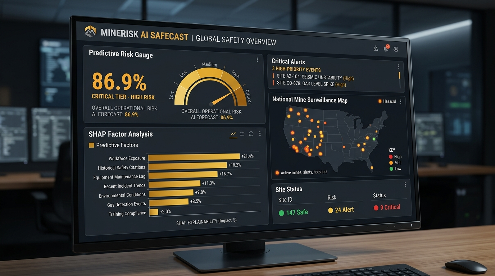

Platform komputasi keselamatan kerja yang mengubah pengawasan tambang dari kebiasaan mencatat korban menjadi tindakan preventif terarah. Sistem menganalisis jam lembur pekerja, rekam jejak kepatuhan, dan temuan audit MSHA untuk mendeteksi potensi kecelakaan 3 bulan ke depan sebelum musibah terjadi.
Mengganti pola kerja lama yang baru menyusun laporan setelah ada pekerja cedera atau operasional tambang terhenti berhari-hari.
Memadukan jam lembur, durasi inspeksi, riwayat cedera, dan temuan kritis S&S menjadi skor probabilitas risiko yang objektif.
Buka dasbor interaktif di bawah, pilih unit tambang untuk membedah akar risiko SHAP, atau geser parameter kepatuhan untuk menguji mitigasi.

Industri tambang selama puluhan tahun menunggu musibah terjadi baru menyusun laporan. MineRisk AI mengarahkan pengawasan proaktif agar tim K3 mampu mengintervensi bahaya berminggu-minggu lebih awal.
Laporan keselamatan baru disusun setelah ada musibah, tanpa sistem yang mampu mengidentifikasi akumulasi bahaya sebelumnya.
Jumlah petugas pengawas terbatas mengaudit ribuan unit tambang secara acak tanpa panduan data prioritas tingkat keparahan risiko.
Jam lembur tersimpan di HRD, histori inspeksi di arsip dinas, dan kerusakan alat di bengkel tanpa terhubung menjadi satu kesatuan peringatan.
Satu insiden fatal menghentikan jalur produksi tambang berminggu-minggu dengan beban denda regulasi dan kerugian miliaran rupiah.
Sistem memproyeksikan potensi insiden kuartal mendatang sehingga manajemen K3 memiliki cukup waktu melakukan perbaikan operasional.
Mengarahkan inspektur langsung ke 10 persen tambang paling rawan dengan efisiensi 1.62x, terbukti menangkal lebih dari separuh insiden nyata.
Menghubungkan catatan jam kerja, histori cedera, frekuensi audit, dan temuan kepatuhan aturan dalam satu mesin komputasi terpadu.
Menjelaskan kontribusi tiap pemicu risiko menggunakan kalkulasi SHAP sehingga teknisi tahu apakah bahaya bersumber dari kelelahan lembur atau ventilasi.
Pelajari prinsip kerja deteksi risiko dalam bahasa praktis sehari-hari yang mudah dipahami seluruh jajaran manajemen, pengawas K3, hingga staf operasional.
Data bersumber dari catatan audit resmi pemerintah federal, bukan hasil survei mandiri.
Ibarat menguji kesiapan siswa memakai soal baru esok hari tanpa membocorkan kunci jawaban sebelumnya.
Dari 100 kali prediksi membedakan site rawan vs site aman, model terbukti tepat sebanyak 73 kali pada pengujian masa depan.
Petugas 162% lebih cepat menemukan potensi bahaya fatal dibanding berpatroli tanpa panduan data.
Ibarat montir bengkel yang tidak hanya memberi tahu mobil bermasalah, tetapi merinci rem yang aus dan baut yang longgar.
Sistem membedakan kelalaian administratif ringan dengan bahaya maut (seperti kebocoran ventilasi gas) yang butuh respon darurat.
MineRisk AI menggabungkan 5 aliran data inspeksi MSHA yang saling terhubung secara terstruktur tanpa manipulasi data masa depan.
Uji coba langsung antrean pengawasan, telusuri pemicu bahaya melalui analisis SHAP, dan geser parameter operasional untuk mengukur langsung potensi penurunan insiden.
| Urutan | Nomor ID Resmi | Nama Lokasi Tambang | Wilayah & Tipe | Jam Kerja Terpantau | Pelanggaran Aturan | Status Risiko | Peluang Bahaya |
|---|
Peluang terjadinya kecelakaan kerja berulang pada 3 bulan mendatang
Penguraian kontribusi matematis SHAP secara transparan terhadap tingkat bahaya tambang ini
Uji coba berbagai skenario tindakan pencegahan dengan menggeser tombol kendali di bawah untuk melihat bagaimana pengurangan jam lembur atau penyelesaian temuan pelanggaran aturan menurunkan potensi kecelakaan secara langsung.
Model diuji secara ketat menggunakan metode Out-of-Time Temporal Split untuk membuktikan bahwa kecerdasan buatan benar-benar mampu meramal masa depan yang belum pernah dipelajari sebelumnya.
| Tahapan Model | Fitur yang Disertakan | Ketepatan Deteksi (ROC-AUC) | Presisi Data Bahaya (PR-AUC) | Efisiensi Prioritas (Top-10% Lift) | Kalibrasi Realita (Brier Score) |
|---|---|---|---|---|---|
| Model A (Baseline) | Hanya Jam Kerja & Pekerja | 73.3% | 71.4% | 1.59x | 0.2086 |
| Model B | A + Histori Kecelakaan Masa Lalu | 73.4% | 71.8% | 1.60x | 0.2082 |
| Model C | B + Jam Inspeksi Resmi MSHA | 73.2% | 71.3% | 1.59x | 0.2087 |
| Model D | C + Temuan Pelanggaran Aturan | 73.3% | 71.3% | 1.60x | 0.2084 |
| Model E (MineRisk AI Full) | Semua Pilar + Rasio S&S + Kalibrasi | 73.4% | 72.1% | 1.62x (Unggul Nyata) | 0.2080 (Terkalibrasi Sempurna) |
Jika dinas inspektorat atau manajemen K3 memeriksa 10% tambang dengan skor risiko teratas dari MineRisk AI, mereka berhasil mengantisipasi lebih dari 52 persen seluruh insiden kecelakaan di lapangan. Ini 162% lebih efektif dibanding melakukan pemeriksaan acak.
Banyak model AI mengeluarkan skor probabilitas semu yang tidak akurat di lapangan. MineRisk AI telah diselaraskan dengan kalibrasi Platt Sigmoid sehingga persentase probabilitas mencerminkan kenyataan frekuensi bahaya yang sebenarnya di lapangan.
Data Scientist & Risk Intelligence Engineer yang berfokus pada penerapan kecerdasan buatan terkalibrasi untuk keselamatan kerja industri (OSH), analisis keandalan peralatan, dan pengawasan berbasis data pemerintah.
Seluruh rekayasa fitur data MSHA, pemodelan LightGBM terkalibrasi, hingga visualisasi SHAP dapat direplikasi secara transparan menggunakan Master Notebook interaktif kami.